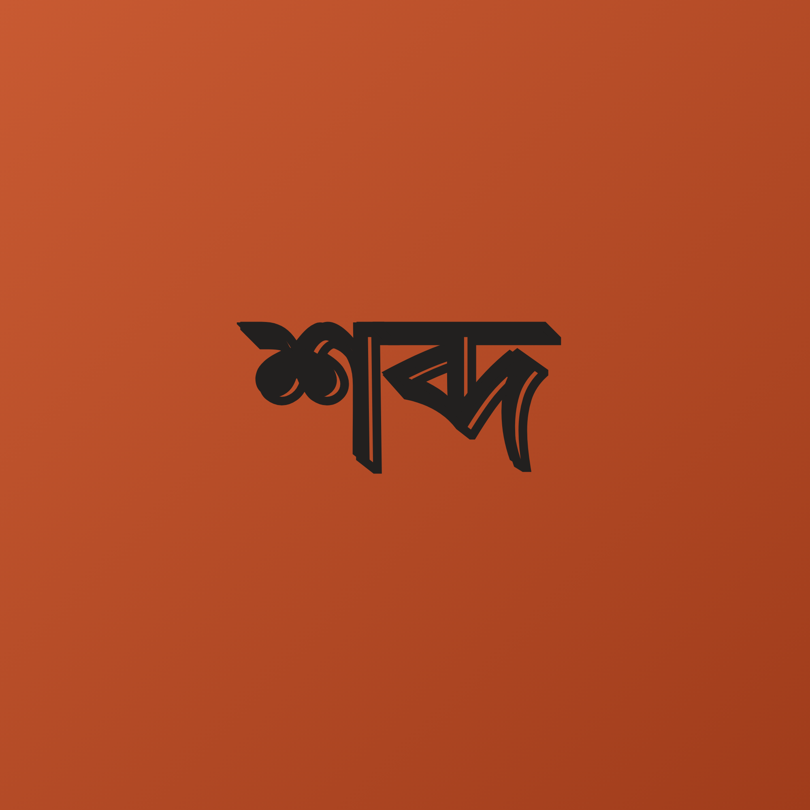

The
Studio
Interactive Concepts
Digital & Tabletop
শব্দ (Shobdo)
Linguistic Application
An educational application structured around the rich linguistic diversity of Bangladesh. Functioning similarly to language-learning platforms, it is designed to help users understand, translate, and preserve regional dialects.
কই সিরিজ
(Koi Series)
A multi-faceted digital ecosystem mapping modern exploration, dining, and commerce across Bangladesh.
কই যাবেন
Koi Jaben
Travel & Exploration
কই খাবেন
Koi Khaben
Food & Dining
কি কিনবেন
Ki Kinben
Commerce & Lifestyle
সে কে? (She Ke?)
Interactive Game Series
A Bengalified interactive 'Guess Who?' game series. Prototyping cultural playability, character design, and localized deductive reasoning mechanics.
TCG System
Tabletop Game Design
A custom Trading Card Game system. Currently in the early concept and rule-drafting phase, focusing on balanced mathematical mechanics and an extensive, original lore.
Manuscripts
In ProgressDeath 8
Novel Series • 8 Parts
A psychological horror and sci-fi thriller series. The narrative centers around a lethal "Dream Server" (System V.9) where subjects must navigate a deadly neural map of 8 interconnected rooms—facing physics traps, logic puzzles, and profound psychological trauma to survive until dawn.
অসমাপ্ত ১০১
Oshomapto 101 • Anthology
A curated anthology compiling original thoughts. It is an exploration of mixed literary formats, weaving together unfinalized poems and short stories into a cohesive collection.
The Horizon
Mediums currently being explored and plotted for future execution.